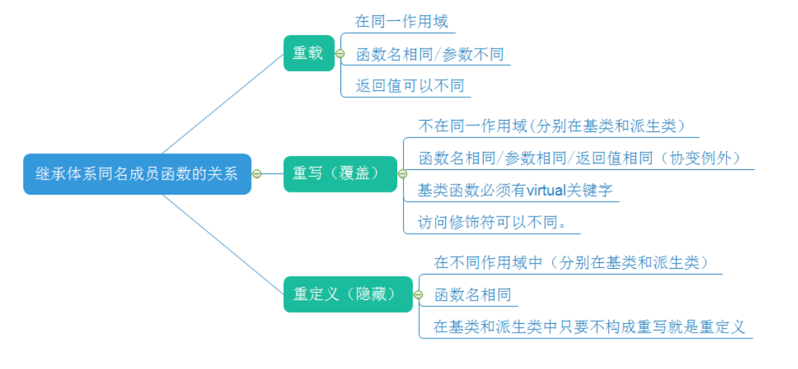
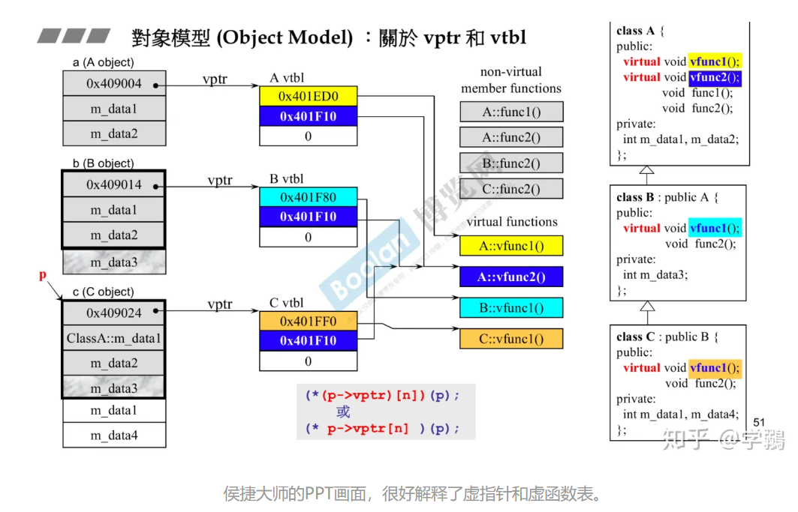

C++ 多态
相同的方式调用，具有不同的实现方式。一个接口，多种方法
静态多态
在编译期间就完成的，编译器根据函数实参的类型，可以推断出需要调用的函数。有两种实现手段（函数重载或函数模板）
1.函数重载
包括普通函数和成员函数。其中函数的参数个数，以及参数类型不同。C++在编译期间为每个函数的修饰名规则与C不同，所以可以实现重载（C++ 函数修饰名包括了所有参数的类型）。其具体规则看 blog
1 | void swap1(int *a, int *b); //交换 int 变量的值 |
2.函数模板
函数模板是通用的函数描述，通过将参数类型传递给模板，使得编译器生成相关函数。
1 | #include <iostream> |
动态多态
构成动态多态需要三个步骤：
子类重写父类虚函数。（类内实现）
父类指针指向子类对象。（类外实现）
利用该指针调用子类虚函数。 （类外实现）
1 | class BasicGame |
重写、重载、重定义区别

协变就是，父类和子类的虚函数的返回对象不同，但是有向下派生的关系。
例如父类虚函数返回父类对象的指针或引用（Parent）,子类虚函数返回子类对象的指针或者引用时（Child）,称为协变。
父类可以返回其他类的对象（AParent）,但是子类也要返回（AChild）
虚函数
多态的关键就是虚函数，父类通过virtual关键字声明和实现虚函数后。此时父类会拥有一张虚函数表（数组，由虚指针得到），虚函数表会记录对应的函数指针（指向对应的虚函数）。当子类继承父类时也会获得一张虚函数表，若子类重写某个虚函数，其虚函数表上的指针会被替换为子类的虚函数指针。
1 | class base { |
详细案例：

虚函数与(构造函数和析构函数)的相关知识
1.构造函数和析构函数能不能是虚函数
构造函数不能是虚函数：因为类构造过程首先分配一块内存（空的），然后调用构造函数。如果构造函数是虚函数，那么就需要虚函数表来调用，但是此时内存里没有虚函数表，因此构造函数不能是虚函数。
析构函数必须是虚函数：
1 | // 析构函数不是虚函数 |
通过上面的例子我们知道，通常为了实现多态我们用的都是父类指针指向子类对象，但是此时若析构函数不是虚函数，我们则只能调用父类析构函数，而不能清除子类的资源。
2.构造函数和析构函数中能不能调用虚函数
可以用，但是最好不要用。类的构造顺序是父类 –>子类，析构顺序是子类 –> 父类。
当父类在执行构造函数时，子类的数据成员还未初始化。若在父类中调用虚函数被解析成子类的虚函数，而子类的虚函数又访问未初始化的数据时，此时会有未知风险。
同理在析构函数时，调用父类析构函数时子类的析构已经执行完成（子类资源已经释放），所以此时父类调用的虚函数会访问已经释放的数据，也会有风险。
所以基于此，c++ primer 第四版中497页15.4.5构造函数和析构中的虚函数讲到，如果在构造函数或析构函数中调用虚函数，则运行的是为构造函数或析构函数自身类型定义的版本（虚机制失效）。另外，必须通过基类类型的引用或指针进行函数调用才会发生多态。